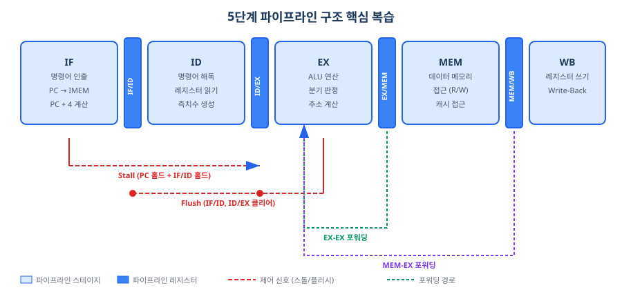
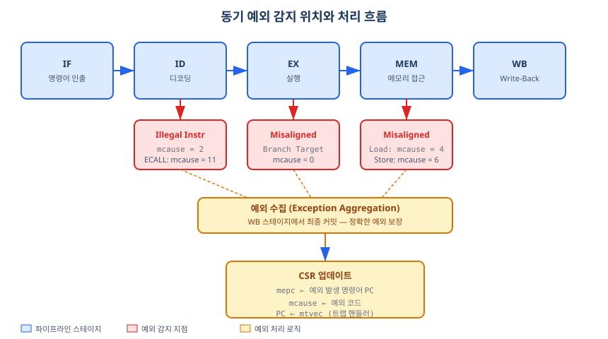
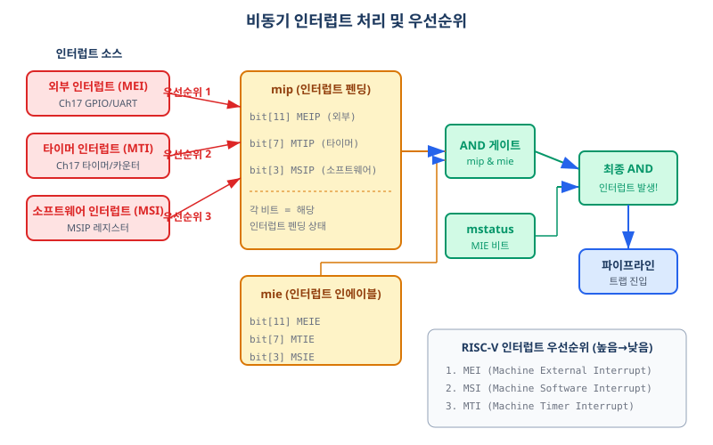
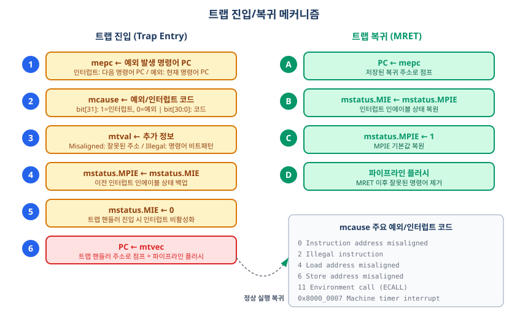
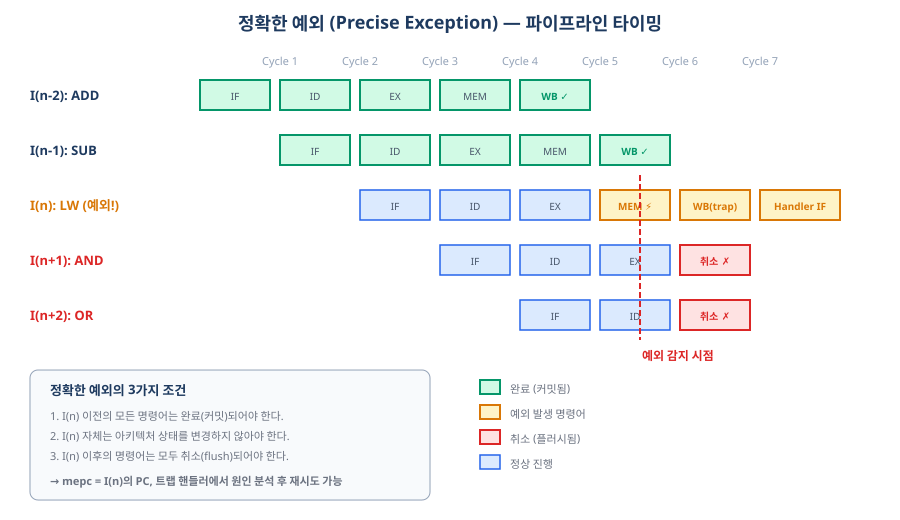
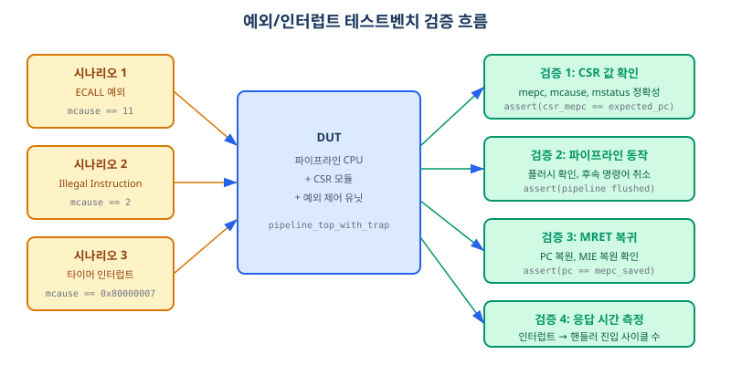

여러분의 스마트폰이 앱 실행 중 전화를 받을 때, CPU는 그 순간 실행 중이던 작업을 정확히 어느 지점까지 완료했는지 기억한 뒤 전화 처리 루틴으로 전환합니다. 이 챕터는 그 "정확히 기억하고 전환하는" 메커니즘을 5단 파이프라인 위에서 구현합니다. Chapter 18에서 완성한 CSR 레지스터와 Chapter 12의 파이프라인이 하나로 통합되어, 동기 예외(Synchronous Exception)와 비동기 인터럽트(Asynchronous Interrupt)를 처리하는 완전한 트랩(Trap) 시스템이 탄생합니다. 이 챕터를 마치면 RV32I 파이프라인 프로세서의 하드웨어 설계가 완성됩니다.
Chapter 12에서 여러분은 5단 파이프라인 프로세서를 완성했습니다. 그 이후 Part 5(캐시), Part 6(AMBA 버스), Part 7(CSR)을 거쳐 이 챕터에 도달했습니다. 오랜 여정 끝에 다시 파이프라인으로 돌아왔으므로, 이 절에서는 핵심 구조를 빠르게 재확인합니다. 새로운 내용은 없습니다 — 이미 알고 있는 것을 30초 안에 다시 불러내는 것이 목적입니다.
우리 파이프라인은 IF(명령어 인출) → ID(디코드) → EX(실행) → MEM(메모리 접근) → WB(결과 쓰기)의 5단계로 구성됩니다. 각 단계 사이에 파이프라인 레지스터(Pipeline Register)가 존재하며, 스톨(Stall)과 플러시(Flush)로 해저드를 처리합니다.

스톨과 플러시는 파이프라인 제어의 두 기본 도구입니다. 스톨(홀드)은 파이프라인 레지스터를 현재 값으로 유지하여 사이클을 "버는" 기법이고, 플러시(버블 삽입)는 파이프라인 레지스터를 NOP(무연산) 상태로 덮어써 해당 명령어를 취소하는 기법입니다.
Chapter 10에서 구현한 스톨 신호들의 이름을 기억하십니까?
PC_en: 0이면 PC를 현재 값으로 유지 (스톨)IF_ID_en: 0이면 IF/ID 파이프라인 레지스터를 유지 (스톨)ID_EX_flush: 1이면 ID/EX 파이프라인 레지스터를 버블로 교체 (플러시)EX_MEM_flush: 1이면 EX/MEM 파이프라인 레지스터를 버블로 교체 (플러시)이 챕터에서는 예외/인터럽트 발생 시 모든 스테이지를 동시에 플러시하는 신호를 추가합니다. 기존 스톨/플러시 신호와 예외 플러시 신호는 OR 연산으로 병합합니다 — 예외 플러시가 분기 플러시의 상위 집합(superset)이기 때문입니다.
젓가락을 들다가 떨어뜨렸습니다. 핸드폰이 울리는 소리는 들리지 않습니다. 오직 지금 이 행위(젓가락 집기) 때문에 발생한 사건입니다. 이것이 동기 예외(Synchronous Exception)의 직관입니다.
동기 예외는 특정 명령어의 실행이 직접적 원인이 되어 발생하는 이벤트입니다. 같은 명령어를 같은 상태에서 실행하면 항상 같은 예외가 발생합니다 — 재현 가능(reproducible)합니다. 반면, 다음 절에서 다룰 비동기 인터럽트는 외부 이벤트가 원인이며, 언제 발생할지 예측할 수 없습니다.
RV32I 파이프라인에서 동기 예외는 명령어의 어느 처리 단계에서 문제가 감지되느냐에 따라 발생 스테이지가 달라집니다. 마치 공장 조립 라인에서 불량 감지 센서가 각 공정 단계마다 설치된 것처럼, ID 라인·EX 라인·MEM 라인에서 각기 다른 종류의 문제를 발견합니다.

| 예외 종류 | 감지 스테이지 | mcause 코드 | RISC-V 스펙 |
|---|---|---|---|
| Illegal Instruction (불법 명령어) | ID | 2 | 하드웨어 필수 |
| Breakpoint (EBREAK) | ID | 3 | 하드웨어 필수 |
| Environment Call from M-mode (ECALL) | ID | 11 | 하드웨어 필수 |
| Instruction Address Misaligned (명령어 주소 비정렬) | EX | 0 | 하드웨어 필수 |
| Load Address Misaligned (로드 주소 비정렬) | MEM | 4 | 하드웨어 필수 |
| Store/AMO Address Misaligned (스토어 주소 비정렬) | MEM | 6 | 하드웨어 필수 |
RISC-V 스펙은 Misaligned Access 예외를 하드웨어가 반드시 처리해야 한다고 명시합니다. 소프트웨어 에뮬레이션으로 대체할 수 없습니다. 비정렬 감지 로직은 ALU가 계산한 메모리 접근 주소의 하위 비트를 조합하여 생성합니다:
alu_result[1:0] != 2'b00이면 Misalignedalu_result[0] != 1'b0이면 Misaligned
디코더(Decoder)는 명령어 비트 패턴을 분석하여 세 가지 신호를 생성합니다:
id_illegal_instr, id_ecall, id_ebreak.
이 세 신호를 OR 연산하면 ID 스테이지 전체 예외 발생 여부가 됩니다.
// ID 스테이지 예외 감지
assign id_exception = id_illegal_instr | id_ecall | id_ebreak;
always_comb begin
id_cause = 32'd0;
id_tval = 32'd0;
if (id_illegal_instr) begin
id_cause = 32'd2; // Illegal instruction
id_tval = 32'd0;
end else if (id_ecall) begin
id_cause = 32'd11; // Environment call from M-mode
id_tval = 32'd0;
end else if (id_ebreak) begin
id_cause = 32'd3; // Breakpoint
id_tval = 32'd0;
end
end
MEM 스테이지에서는 ALU가 계산한 주소(mem_alu_result)의 정렬 여부를 확인합니다.
비정렬 주소가 감지되면 mem_load_misaligned 또는 mem_store_misaligned가 활성화됩니다.
mtval(Machine Trap Value) 레지스터에는 비정렬 접근을 시도한 주소를 저장하여 소프트웨어 핸들러가 참조할 수 있게 합니다.
// MEM 스테이지 예외 감지
assign mem_exception = mem_load_misaligned | mem_store_misaligned;
always_comb begin
mem_cause = 32'd0;
mem_tval = 32'd0;
if (mem_load_misaligned) begin
mem_cause = 32'd4; // Load address misaligned
mem_tval = mem_alu_result; // 비정렬 로드 주소 → mtval 저장
end else if (mem_store_misaligned) begin
mem_cause = 32'd6; // Store/AMO address misaligned
mem_tval = mem_alu_result; // 비정렬 스토어 주소 → mtval 저장
end
end
이번에는 밥을 먹다가 핸드폰이 울리는 상황입니다. 젓가락이 문제가 아닙니다 — 외부에서 전화가 왔습니다. 이것이 비동기 인터럽트(Asynchronous Interrupt)의 직관입니다. 인터럽트는 현재 실행 중인 명령어와 무관하게, 언제든 외부 이벤트에 의해 발생합니다.
Chapter 17에서 구현한 APB 슬레이브 타이머가 바로 이 외부 이벤트를 생성하는 주체입니다.
타이머가 목표 카운트에 도달하면 timer_irq 신호를 1로 올립니다.
이 신호가 파이프라인을 어떤 경로로 거쳐 트랩 처리로 이어지는지가 이 절의 핵심입니다.
mstatus.MIE=1),
② 해당 부서 내선이 활성화되어 있어야 하며 (mie 해당 비트 = 1),
③ 실제로 전화가 걸려오고 있어야 합니다 (mip 해당 비트 = 1).
하나라도 0이면 전화는 연결되지 않습니다.
인터럽트 수용 = mstatus.MIE AND mie[비트] AND mip[비트]

| 인터럽트 종류 | mip 비트 | mie 비트 | mcause (bit31=1) | 우선순위 |
|---|---|---|---|---|
| Machine External Interrupt (MEI, 외부 인터럽트) | MEIP [bit 11] | MEIE [bit 11] | 0x8000_000B | 1 (최우선) |
| Machine Software Interrupt (MSI, 소프트웨어 인터럽트) | MSIP [bit 3] | MSIE [bit 3] | 0x8000_0003 | 2 |
| Machine Timer Interrupt (MTI, 타이머 인터럽트) | MTIP [bit 7] | MTIE [bit 7] | 0x8000_0007 | 3 |
mcause의 비트 31이 1이면 인터럽트, 0이면 예외입니다.
타이머 인터럽트의 mcause가 0x8000_0007인 이유는 bit31=1(인터럽트) + 예외 코드=7(타이머)이기 때문입니다.
// 3단 마스킹 — 각 인터럽트 펜딩 신호 생성
// 조건: 전역 인에이블 AND 개별 인에이블 AND 외부 인터럽트 신호
assign mei_pending = ext_irq & mie_meie & mstatus_mie; // 외부 인터럽트
assign msi_pending = sw_irq & mie_msie & mstatus_mie; // 소프트웨어 인터럽트
assign mti_pending = timer_irq & mie_mtie & mstatus_mie; // 타이머 인터럽트
assign interrupt_pending = mei_pending | msi_pending | mti_pending;
// 우선순위 인코딩 — MEI > MSI > MTI
always_comb begin
int_cause = 32'd0;
if (mei_pending)
int_cause = 32'h8000_000B; // Machine external interrupt
else if (msi_pending)
int_cause = 32'h8000_0003; // Machine software interrupt
else if (mti_pending)
int_cause = 32'h8000_0007; // Machine timer interrupt
end
비행기에 이상 상황이 발생했습니다. 블랙박스(mepc, mcause)가 현재 상황을 기록하고, 자동 조종(mstatus.MIE)이 비활성화되어 기장이 수동 조종(트랩 핸들러)으로 전환합니다. 비상 처리가 끝나면 기록된 데이터를 바탕으로(mepc → 복귀 주소) 자동 조종이 재활성화됩니다(MRET).
이것이 트랩(Trap)의 직관입니다. 트랩은 예외와 인터럽트를 모두 포괄하는 상위 개념으로, CPU가 정상 실행을 멈추고 핸들러로 제어를 넘기는 이벤트입니다.

트랩 발생 시 하드웨어가 수행하는 5단계 시퀀스:
mtvec는 소프트웨어(부트 코드)가 CSRRW 명령어로 미리 설정해 둔 트랩 핸들러 진입 주소입니다(Ch18 참조).단일 포트 CSR 설계 제약상 트랩 발생 시 mepc, mcause, mtval, mstatus를 한 사이클에 모두 쓸 수 없습니다. 따라서 FSM(유한 상태 기계)을 사용하여 4사이클에 걸쳐 순차적으로 CSR을 쓰는 방식을 채택합니다. 이 동안 파이프라인은 플러시 상태를 유지해야 합니다.
// 트랩 진입/복귀 상태 머신 정의
typedef enum logic [2:0] {
S_IDLE, // 정상 동작
S_TRAP_MEPC, // 트랩: mepc 쓰기 (사이클 1)
S_TRAP_MCAUSE, // 트랩: mcause 쓰기 (사이클 2)
S_TRAP_MTVAL, // 트랩: mtval 쓰기 (사이클 3)
S_TRAP_MSTATUS, // 트랩: mstatus 업데이트 (사이클 4)
S_MRET_MSTATUS // MRET: mstatus 복원 (사이클 1)
} trap_state_t;
// 상태 전이 로직
always_comb begin
next_state = state;
case (state)
S_IDLE: begin
if (trap_taken) next_state = S_TRAP_MEPC;
else if (mret_instr) next_state = S_MRET_MSTATUS;
end
S_TRAP_MEPC: next_state = S_TRAP_MCAUSE;
S_TRAP_MCAUSE: next_state = S_TRAP_MTVAL;
S_TRAP_MTVAL: next_state = S_TRAP_MSTATUS;
S_TRAP_MSTATUS: next_state = S_IDLE;
S_MRET_MSTATUS: next_state = S_IDLE;
default: next_state = S_IDLE;
endcase
end
MRET(Machine Return) 명령어는 트랩 핸들러 종료 후 원래 코드로 복귀하는 명령어입니다. 트랩 진입의 역방향 시퀀스를 수행합니다:
// MRET: mstatus 복원 (S_MRET_MSTATUS 상태)
S_MRET_MSTATUS: begin
csr_we = 1'b1;
csr_waddr = CSR_MSTATUS;
csr_wdata = csr_mstatus;
csr_wdata[MIE_BIT] = csr_mstatus[MPIE_BIT]; // MIE <- MPIE 복원
csr_wdata[MPIE_BIT] = 1'b1; // MPIE <- 1 (기본값)
end
이 절이 Chapter 19의 핵심입니다. 도미노 5개가 차례로 쓰러지고 있습니다(파이프라인 5단계에 명령어가 흐릅니다). 세 번째 도미노가 쓰러지는 순간 예외가 감지되었습니다. 규칙은 명확합니다: 이미 쓰러진 도미노(완료된 명령어)는 그대로 두고, 아직 쓰러지지 않은 도미노(후속 명령어)는 잡아 세웁니다(플러시). 예외 처리 후에는 문제가 된 도미노부터 다시 시작합니다(mepc로 복귀).
이것이 정확한 예외(Precise Exception)입니다. "이전 명령어는 완료, 이후 명령어는 취소"라는 정의가 5단 파이프라인에서 어떻게 구현되는지 단계별로 살펴봅니다.

특정 사이클의 파이프라인 스냅샷을 분석합니다:
exception_unit이 감지EX 스테이지의 명령어 B는 ALU 연산을 이미 완료했지만 아직 레지스터 파일에 쓰지 않았습니다. 플러시하면 파이프라인 레지스터가 버블로 교체되어 B의 ALU 결과는 사라집니다. In-Order 파이프라인에서 ALU 연산 자체는 부작용(Side Effect)이 없습니다 — 레지스터 파일에 값이 쓰이는 것은 WB 스테이지에서만 일어나기 때문입니다. 이것이 In-Order 파이프라인에서 정확한 예외가 구현 가능한 핵심 이유입니다.
여러 스테이지에서 동시에 예외가 발생할 수 있습니까? 이론상 가능합니다. MEM 스테이지에서 Load Misaligned가 발생하는 동시에 ID 스테이지에서 Illegal Instruction이 감지될 수 있습니다. 이때 어느 예외를 먼저 처리해야 합니까?
답은 MEM > EX > ID 순서입니다. 공항 보안 검색대 비유로 생각하면: 같은 시간에 여러 레인에서 문제가 발생했을 때, 더 뒤쪽(처리 단계가 더 진행된) 레인을 먼저 처리합니다. MEM 스테이지의 명령어가 ID 스테이지 명령어보다 프로그램 순서상 더 앞선 명령어이기 때문입니다. 정확한 예외는 프로그램 순서상 "가장 먼저" 예외를 발생시킨 명령어를 우선 처리합니다.
아래 코드에서 사용되는 interrupt_pending은 19.3절에서 구현한 3단 마스킹
(mstatus.MIE AND mie[비트] AND mip[비트]) 결과를 OR로 합산한 신호입니다
(mei_pending | msi_pending | mti_pending).
이 신호가 1이면 하나 이상의 인터럽트가 수용 조건을 충족한 상태를 의미합니다.
// 최종 트랩 결정 — 우선순위: MEM 예외 > EX 예외 > ID 예외 > 인터럽트
always_comb begin
trap_taken = 1'b0;
trap_pc = mtvec;
trap_mepc = 32'd0;
trap_mcause = 32'd0;
trap_mtval = 32'd0;
// 우선순위 1: MEM 스테이지 동기 예외 (프로그램 순서상 가장 앞선 명령어)
if (mem_exception) begin
trap_taken = 1'b1;
trap_mepc = mem_pc;
trap_mcause = mem_cause;
trap_mtval = mem_tval;
end
// 우선순위 2: EX 스테이지 동기 예외
else if (ex_exception) begin
trap_taken = 1'b1;
trap_mepc = ex_pc;
trap_mcause = ex_cause;
trap_mtval = ex_tval;
end
// 우선순위 3: ID 스테이지 동기 예외
else if (id_exception) begin
trap_taken = 1'b1;
trap_mepc = id_pc;
trap_mcause = id_cause;
trap_mtval = id_tval;
end
// 우선순위 4: 비동기 인터럽트 (동기 예외가 없을 때만 처리)
else if (interrupt_pending) begin
trap_taken = 1'b1;
// 간략화: MEM 스테이지 PC + 4 (완전 구현: 미완료 가장 오래된 명령어의 PC)
trap_mepc = mem_pc + 32'd4;
trap_mcause = int_cause;
trap_mtval = 32'd0;
end
end
여기서부터는 19.5절의 두 번째 주제입니다. 앞의 정확한 예외와 우선순위 로직은 예외가 발생했을 때 어떻게 처리하는지를 다뤘습니다. 지금부터는 트랩 처리 과정에서 CSR 명령어가 파이프라인에 있을 때 발생하는 또 다른 해저드를 살펴봅니다. 앞 내용을 충분히 이해했다면 이 주제는 상대적으로 독립적입니다 — 잠시 내용을 정리하고 진행하십시오.
Chapter 10에서 학습한 일반 데이터 해저드(RAW 해저드)와 CSR 해저드는 다릅니다. 일반 RAW 해저드는 EX-EX / MEM-EX 포워딩으로 해결합니다. 그러나 CSR은 범용 레지스터 파일(x0~x31)과 완전히 별도의 읽기/쓰기 포트를 사용합니다 — 기존 포워딩 유닛이 CSR 경로를 포함하지 않으므로, CSR 해저드 처리를 위한 별도 처리가 필요합니다.
CSR 해저드 시나리오: CSRRW x0, mstatus, x1 직후 CSRRS x2, mstatus, x0를 실행하면
ID 스테이지에서 mstatus를 읽지만, 앞 명령어의 WB 단계에서 쓰기가 아직 완료되지 않았습니다.
이것이 RAW(Read After Write) 해저드입니다.
| 해결 방법 | 구현 복잡도 | 성능 비용 | 권장 상황 |
|---|---|---|---|
| 2사이클 스톨 삽입 | 낮음 — CSR 명령어 감지 시 PC_en=0, IF_ID_en=0 | CSR 명령어마다 2CPI 추가 | 본 교재 권장 (단순 구현) |
| WB→ID 포워딩 경로 추가 | 높음 — CSR 전용 포워딩 MUX 추가 | 스톨 없음 | CSR 명령어가 빈번한 고성능 구현 |
본 교재에서는 2사이클 스톨 삽입 방식을 채택합니다. 교육 목적에서 복잡도 대비 효과가 높고, 합성 결과를 Vivado에서 직관적으로 확인할 수 있기 때문입니다. CSR 명령어가 빈번하지 않은 M-mode 전용 구현에서 성능 비용은 수용 가능한 수준입니다.
Chapter 11에서 구현한 분기 플러시 신호(flush_if, flush_id)와
이 챕터에서 추가하는 예외 플러시 신호가 동시에 발생할 수 있습니다.
예외 플러시는 분기 플러시보다 더 넓은 범위(IF~MEM 전체)를 커버하므로,
두 신호를 OR 연산으로 병합합니다. 예외 플러시가 분기 플러시의 상위 집합(Superset)이기 때문입니다.
// 최상위 모듈에서 플러시 신호 병합
// 예외 플러시(exception_flush_*) OR 분기 플러시(branch_flush_*)
assign flush_if_final = exception_flush_if | branch_flush_if;
assign flush_id_final = exception_flush_id | branch_flush_id;
assign flush_ex_final = exception_flush_ex; // 예외만 해당
assign flush_mem_final = exception_flush_mem; // 예외만 해당
구현 후 시뮬레이션 파형에서 예외 처리가 올바르게 동작하는지 확인하는 4단계 체크리스트입니다:
trap_taken 신호가 High가 되는 클럭 사이클을 확인합니다.trap_mcause 값이 기대값과 일치하는지 확인합니다. (예: ECALL → 11, Load Misaligned → 4)flush_if / flush_id / flush_ex / flush_mem 신호가 올바른 스테이지까지 활성화되는지 확인합니다. (MEM 예외 시 if/id/ex/mem 모두 1)mtvec과 일치하는지 확인합니다. MRET 후에는 mepc와 일치해야 합니다.
설계한 exception_unit과 trap_controller가 올바르게 동작하는지 검증합니다.
테스트벤치는 5개의 시나리오로 구성되며, SystemVerilog assertion을 사용하여 자동 검증합니다.

검증 의도: ECALL 명령어가 ID 스테이지에 도달했을 때 trap_taken=1, trap_mcause=11, trap_mepc=ECALL 명령어의 PC가 정확히 설정되는지 확인합니다.
// 시나리오 1: ECALL 예외 검증
task test_ecall();
$display("\n===== 시나리오 1: ECALL 예외 =====");
reset_inputs();
@(posedge clk);
id_ecall = 1'b1;
id_pc = 32'h0000_0100; // ECALL 명령어의 PC
@(posedge clk);
// SystemVerilog assertion으로 자동 검증
assert (trap_taken == 1'b1) else $error("[FAIL] trap_taken 미활성화");
assert (trap_mcause == 32'd11) else $error("[FAIL] mcause 불일치 (기대: 11)");
assert (trap_mepc == 32'h0000_0100) else $error("[FAIL] mepc 불일치");
assert (flush_if && flush_id) else $error("[FAIL] 플러시 신호 미활성화");
$display("[PASS] ECALL: mcause=%0d, mepc=0x%08h", trap_mcause, trap_mepc);
endtask
시나리오 2(EBREAK 예외)는 시나리오 1과 처리 로직이 동일합니다(id_ebreak = 1'b1, trap_mcause = 3). 연습문제 2번에서 직접 구현해 보십시오.
검증 의도: LW x1, 3(x2)처럼 비정렬 주소(0x00010003)로 워드 로드 시도 시
trap_mcause=4, trap_mtval=비정렬 주소가 올바르게 설정되는지 확인합니다.
mtval에 실제 비정렬 주소가 저장되어야 소프트웨어 핸들러가 예외 원인을 진단할 수 있습니다.
// 시나리오 3: Load Misaligned 예외
task test_load_misaligned();
reset_inputs();
@(posedge clk);
mem_load_misaligned = 1'b1;
mem_alu_result = 32'h0001_0003; // 비정렬 주소 (워드: [1:0] != 2'b00)
mem_pc = 32'h0000_0300;
@(posedge clk);
assert (trap_mcause == 32'd4)
else $error("[FAIL] mcause 불일치 (기대: 4)");
assert (trap_mtval == 32'h0001_0003)
else $error("[FAIL] mtval 불일치: 비정렬 주소가 저장되어야 함");
$display("[PASS] Load Misaligned: mcause=%0d, mtval=0x%08h",
trap_mcause, trap_mtval);
endtask
검증 의도: timer_irq가 활성화된 후 trap_taken이 1이 되기까지 몇 사이클이 걸리는지 측정합니다.
이 구현에서 인터럽트 응답 시간(Interrupt Latency)은 조합 로직 기반이므로 1사이클(동일 사이클 응답)입니다.
트랩 FSM 처리에 4사이클이 추가로 필요합니다.
// 시나리오 4: 타이머 인터럽트 응답 시간 측정
task test_timer_interrupt();
int irq_assert_cycle, trap_taken_cycle;
reset_inputs();
@(posedge clk);
timer_irq = 1'b1;
mem_pc = 32'h0000_0400;
irq_assert_cycle = $time / CLK_PERIOD; // IRQ 인가 사이클 기록
@(posedge clk);
if (trap_taken) begin
trap_taken_cycle = $time / CLK_PERIOD;
$display("[PASS] 타이머 인터럽트: mcause=0x%08h, 응답시간=%0d 사이클",
trap_mcause, trap_taken_cycle - irq_assert_cycle);
end
assert (trap_mcause == 32'h8000_0007) // MTI: bit31=1, code=7
else $error("[FAIL] mcause 불일치 (기대: 0x80000007)");
endtask
검증 의도: MEM 스테이지에서 Load Misaligned 예외가 발생하는 동시에 timer_irq가 활성화될 때,
동기 예외(mcause=4)가 비동기 인터럽트(mcause=0x8000_0007)보다 우선 처리되는지 확인합니다.
// 시나리오 5: 동기 예외 + 비동기 인터럽트 동시 발생 → 예외 우선
task test_priority();
reset_inputs();
@(posedge clk);
// 동기 예외와 비동기 인터럽트 동시 인가
mem_load_misaligned = 1'b1;
mem_alu_result = 32'h0001_0001;
mem_pc = 32'h0000_0500;
timer_irq = 1'b1;
@(posedge clk);
// 동기 예외가 우선: mcause = 4 (Load Misaligned), NOT 0x80000007
assert (trap_mcause == 32'd4)
else $error("[FAIL] 동기 예외가 인터럽트보다 우선되어야 함 (mcause=%0d)",
trap_mcause);
$display("[PASS] 우선순위: 동기 예외(mcause=4)가 타이머 인터럽트보다 우선");
endtask
파형에서 확인할 핵심 신호 목록:
trap_taken: 트랩 발생 여부 — 1이 되는 사이클을 기점으로 플러시 동작 확인trap_mcause: 예외/인터럽트 코드 — 기대값과 일치 여부trap_mepc: 복귀 PC — 예외 명령어 PC 또는 인터럽트 수용 PCflush_if / flush_id / flush_ex / flush_mem: 플러시 범위 — 트랩 발생 스테이지에 따라 올바른 범위 활성화# VCS 컴파일 및 시뮬레이션
vcs -sverilog -full64 \
code_examples/ch19_exception_unit.sv \
code_examples/ch19_exception_tb.sv \
-o sim_exception +v2k
./sim_exception -gui &
# Vivado Simulator (Tcl 콘솔)
# add_files {ch19_exception_unit.sv ch19_exception_tb.sv}
# set_property top exception_tb [get_filesets sim_1]
# launch_simulation
축하합니다. 이 챕터를 완성했다면 RV32I 5단 파이프라인 프로세서의 하드웨어 설계가 완성되었습니다. Chapter 1에서 "무엇을 만들지"를 바라보았던 조감도가 이제 실제로 동작하는 SystemVerilog 코드로 구현되었습니다.
Part 1~7을 통해 쌓아온 여정을 되돌아봅니다:
| 개념 | 정의/특성 | 핵심 구현 포인트 |
|---|---|---|
| 동기 예외 | 특정 명령어 실행의 직접적 결과, 재현 가능 | 스테이지별 감지 (ID/EX/MEM), mcause bit31=0 |
| 비동기 인터럽트 | 외부 이벤트 원인, 비결정적 발생 | 3단 마스킹 (MIE AND mie AND mip), mcause bit31=1 |
| 정확한 예외 | 예외 이전 명령어 완료, 이후 명령어 취소 | MEM>EX>ID 우선순위, In-Order 파이프라인에서 보장 가능 |
| 트랩 진입 시퀀스 | 5단계: mepc→mcause→mtval→mstatus→PC←mtvec | FSM 4사이클 순차 CSR 쓰기, 플러시 지속 |
| MRET 복귀 | 3단계: MIE←MPIE, MPIE←1, PC←mepc | FSM 1사이클, M-mode 전용 구현에서 MPP 생략 가능 |
| CSR 해저드 | ID 읽기 vs WB 쓰기 RAW 해저드 | 2사이클 스톨 (본 교재) 또는 WB→ID 포워딩 (고성능) |
LW x1, 3(x2) 명령어가 EX 스테이지에서 주소 0x00000003을 계산했습니다.
어떤 예외가 발생합니까? mcause 값은 무엇입니까? mepc에는 무엇이 저장됩니까?
Chapter 20 — FPGA 합성 최적화와 타이밍 클로저에서는 지금까지 설계한 전체 RV32I 파이프라인 프로세서를 Basys 3 FPGA에서 실제로 동작시킵니다.
예외 처리 로직은 약 200~300개의 LUT가 추가되며, exception_unit의 우선순위 결정 조합 로직이 MEM 스테이지 타이밍에 영향을 줄 수 있습니다.
Vivado report_timing으로 이 영향을 직접 측정하고, 50MHz 타이밍 클로저를 달성하는 방법을 다룹니다.
설계 선택의 비용을 도구로 측정하는 것 자체가 엔지니어의 핵심 역량입니다.
exception_unit.sv의 동기 예외 우선순위 로직에서 의도적으로 MEM과 EX의 우선순위를 바꾸었습니다(EX > MEM).
이때 발생하는 문제를 파이프라인 타이밍 다이어그램으로 설명하고, 정확한 예외 보장이 왜 깨지는지 서술하십시오.
trap_taken && state == S_IDLE 조건)에서 이 인터럽트가 무시되는 이유를 FSM 상태 전이 관점에서 분석하십시오.
exception_tb.sv의 시나리오 4에서 측정한 타이머 인터럽트 응답 시간과,
타이머 인터럽트 핸들러의 첫 번째 명령어가 실행되기까지의 전체 지연 시간을 비교 평가하십시오.
100MHz 클럭에서 이 지연 시간은 몇 나노초이며, 실시간 응용(예: 10ms 주기 작업 스케줄링)에 충분한지 평가하십시오.
이 챕터에서 단계별로 설명한 모든 모듈의 완전한 소스 코드입니다. 본문에서 이미 각 코드의 동작 원리를 설명하였으므로, 지금 당장 전부를 이해하려 하지 않아도 됩니다. 이 코드는 Chapter 20 FPGA 합성 실습에서 그대로 사용합니다.
// ============================================================================
// 예외 처리 유닛 (Exception Unit)
// Chapter 19 — 예외/인터럽트와 파이프라인 통합
// RISC-V 프로세서 설계 완전정복
// ============================================================================
// 파이프라인 각 스테이지에서 발생하는 동기 예외를 감지하고,
// 비동기 인터럽트 수용 여부를 결정한다.
// 우선순위: MEM 예외 > EX 예외 > ID 예외 > 비동기 인터럽트
// ============================================================================
`timescale 1ns / 1ps
module exception_unit (
// --- 클럭/리셋 ---
input logic clk,
input logic rst_n,
// --- ID 스테이지 예외 입력 ---
input logic id_illegal_instr, // 불법 명령어 감지
input logic id_ecall, // ECALL 명령어 감지
input logic id_ebreak, // EBREAK 명령어 감지
input logic [31:0] id_pc, // ID 스테이지 PC
// --- EX 스테이지 예외 입력 ---
input logic ex_branch_misaligned, // 분기 대상 주소 비정렬
input logic [31:0] ex_branch_target, // 분기 대상 주소
input logic [31:0] ex_pc, // EX 스테이지 PC
// --- MEM 스테이지 예외 입력 ---
input logic mem_load_misaligned, // 로드 주소 비정렬
input logic mem_store_misaligned, // 스토어 주소 비정렬
input logic [31:0] mem_alu_result, // 비정렬 접근 주소
input logic [31:0] mem_pc, // MEM 스테이지 PC
// --- 비동기 인터럽트 입력 ---
input logic ext_irq, // 외부 인터럽트 (MEI)
input logic timer_irq, // 타이머 인터럽트 (MTI)
input logic sw_irq, // 소프트웨어 인터럽트 (MSI)
// --- CSR 상태 입력 ---
input logic mstatus_mie, // 전역 인터럽트 인에이블
input logic mie_meie, // 외부 인터럽트 인에이블
input logic mie_mtie, // 타이머 인터럽트 인에이블
input logic mie_msie, // 소프트웨어 인터럽트 인에이블
input logic [31:0] mtvec, // 트랩 벡터 주소
// --- 출력: 트랩 제어 ---
output logic trap_taken, // 트랩 발생 (플러시 트리거)
output logic [31:0] trap_pc, // 트랩 핸들러 PC (= mtvec)
output logic [31:0] trap_mepc, // 저장할 mepc 값
output logic [31:0] trap_mcause, // 저장할 mcause 값
output logic [31:0] trap_mtval, // 저장할 mtval 값
// --- 출력: 파이프라인 플러시 ---
output logic flush_if, // IF 스테이지 플러시
output logic flush_id, // ID 스테이지 플러시
output logic flush_ex, // EX 스테이지 플러시
output logic flush_mem // MEM 스테이지 플러시
);
// -----------------------------------------------------------------------
// 동기 예외 감지 — ID 스테이지
// -----------------------------------------------------------------------
logic id_exception;
logic [31:0] id_cause, id_tval;
assign id_exception = id_illegal_instr | id_ecall | id_ebreak;
always_comb begin
id_cause = 32'd0;
id_tval = 32'd0;
if (id_illegal_instr) begin
id_cause = 32'd2; // Illegal instruction
end else if (id_ecall) begin
id_cause = 32'd11; // Environment call from M-mode
end else if (id_ebreak) begin
id_cause = 32'd3; // Breakpoint
end
end
// -----------------------------------------------------------------------
// 동기 예외 감지 — EX 스테이지
// -----------------------------------------------------------------------
logic ex_exception;
logic [31:0] ex_cause, ex_tval;
assign ex_exception = ex_branch_misaligned;
always_comb begin
ex_cause = 32'd0;
ex_tval = 32'd0;
if (ex_branch_misaligned) begin
ex_cause = 32'd0; // Instruction address misaligned
ex_tval = ex_branch_target; // 잘못된 분기 대상 주소
end
end
// -----------------------------------------------------------------------
// 동기 예외 감지 — MEM 스테이지
// -----------------------------------------------------------------------
logic mem_exception;
logic [31:0] mem_cause, mem_tval;
assign mem_exception = mem_load_misaligned | mem_store_misaligned;
always_comb begin
mem_cause = 32'd0;
mem_tval = 32'd0;
if (mem_load_misaligned) begin
mem_cause = 32'd4; // Load address misaligned
mem_tval = mem_alu_result;
end else if (mem_store_misaligned) begin
mem_cause = 32'd6; // Store/AMO address misaligned
mem_tval = mem_alu_result;
end
end
// -----------------------------------------------------------------------
// 비동기 인터럽트 감지 — 3단 마스킹
// -----------------------------------------------------------------------
logic mei_pending, msi_pending, mti_pending, interrupt_pending;
logic [31:0] int_cause;
// 조건: 전역 인에이블 AND 개별 인에이블 AND 인터럽트 신호
assign mei_pending = ext_irq & mie_meie & mstatus_mie;
assign msi_pending = sw_irq & mie_msie & mstatus_mie;
assign mti_pending = timer_irq & mie_mtie & mstatus_mie;
assign interrupt_pending = mei_pending | msi_pending | mti_pending;
// 우선순위 인코딩: MEI(11) > MSI(3) > MTI(7)
always_comb begin
int_cause = 32'd0;
if (mei_pending) int_cause = 32'h8000_000B; // Machine external
else if (msi_pending) int_cause = 32'h8000_0003; // Machine software
else if (mti_pending) int_cause = 32'h8000_0007; // Machine timer
end
// -----------------------------------------------------------------------
// 최종 트랩 결정 — 우선순위: MEM>EX>ID 예외 > 비동기 인터럽트
// -----------------------------------------------------------------------
always_comb begin
trap_taken = 1'b0;
trap_pc = mtvec;
trap_mepc = 32'd0;
trap_mcause = 32'd0;
trap_mtval = 32'd0;
if (mem_exception) begin // 우선순위 1: MEM 스테이지
trap_taken = 1'b1;
trap_mepc = mem_pc;
trap_mcause = mem_cause;
trap_mtval = mem_tval;
end else if (ex_exception) begin // 우선순위 2: EX 스테이지
trap_taken = 1'b1;
trap_mepc = ex_pc;
trap_mcause = ex_cause;
trap_mtval = ex_tval;
end else if (id_exception) begin // 우선순위 3: ID 스테이지
trap_taken = 1'b1;
trap_mepc = id_pc;
trap_mcause = id_cause;
trap_mtval = id_tval;
end else if (interrupt_pending) begin // 우선순위 4: 비동기 인터럽트
trap_taken = 1'b1;
// 간략화: mem_pc + 4 (완전 구현: 미완료 가장 오래된 명령어 PC)
trap_mepc = mem_pc + 32'd4;
trap_mcause = int_cause;
trap_mtval = 32'd0;
end
end
// -----------------------------------------------------------------------
// 파이프라인 플러시 — 트랩 발생 시 전체 스테이지 플러시
// -----------------------------------------------------------------------
assign flush_if = trap_taken;
assign flush_id = trap_taken;
assign flush_ex = trap_taken;
assign flush_mem = trap_taken;
endmodule
// ============================================================================
// 트랩 컨트롤러 (Trap Controller)
// Chapter 19 — 예외/인터럽트와 파이프라인 통합
// RISC-V 프로세서 설계 완전정복
// ============================================================================
// 트랩 진입(trap entry)과 MRET 복귀 시퀀스를 FSM으로 관리한다.
// 4사이클에 걸쳐 CSR을 순차 쓰기하고, PC를 mtvec/mepc로 변경한다.
// ============================================================================
`timescale 1ns / 1ps
module trap_controller (
input logic clk,
input logic rst_n,
// --- 예외 유닛 입력 ---
input logic trap_taken, // 트랩 발생
input logic [31:0] trap_mepc, // 저장할 mepc 값
input logic [31:0] trap_mcause, // 저장할 mcause 값
input logic [31:0] trap_mtval, // 저장할 mtval 값
// --- MRET 감지 ---
input logic mret_instr, // MRET 명령어 (ID 스테이지)
// --- CSR 현재 값 입력 ---
input logic [31:0] csr_mtvec, // 트랩 벡터 기저 주소
input logic [31:0] csr_mepc, // 저장된 복귀 주소
input logic [31:0] csr_mstatus, // 현재 mstatus
// --- CSR 쓰기 출력 ---
output logic csr_we, // CSR 쓰기 인에이블
output logic [11:0] csr_waddr, // CSR 쓰기 주소
output logic [31:0] csr_wdata, // CSR 쓰기 데이터
// --- PC 제어 출력 ---
output logic pc_trap, // 트랩으로 인한 PC 변경
output logic [31:0] pc_next, // 다음 PC (mtvec 또는 mepc)
// --- 파이프라인 플러시 ---
output logic pipeline_flush // 전체 파이프라인 플러시
);
// CSR 주소 상수
localparam CSR_MSTATUS = 12'h300;
localparam CSR_MEPC = 12'h341;
localparam CSR_MCAUSE = 12'h342;
localparam CSR_MTVAL = 12'h343;
localparam MIE_BIT = 3; // mstatus.MIE 비트 위치
localparam MPIE_BIT = 7; // mstatus.MPIE 비트 위치
// FSM 상태 정의
typedef enum logic [2:0] {
S_IDLE, // 정상 동작
S_TRAP_MEPC, // 트랩 진입: mepc 쓰기
S_TRAP_MCAUSE, // 트랩 진입: mcause 쓰기
S_TRAP_MTVAL, // 트랩 진입: mtval 쓰기
S_TRAP_MSTATUS, // 트랩 진입: mstatus 업데이트 (MPIE<-MIE, MIE<-0)
S_MRET_MSTATUS // MRET 복귀: mstatus 복원 (MIE<-MPIE, MPIE<-1)
} trap_state_t;
trap_state_t state, next_state;
logic [31:0] latched_mepc, latched_mcause, latched_mtval;
// 상태 레지스터 및 트랩 정보 래치
always_ff @(posedge clk or negedge rst_n) begin
if (!rst_n) begin
state <= S_IDLE;
latched_mepc <= 32'd0;
latched_mcause <= 32'd0;
latched_mtval <= 32'd0;
end else begin
state <= next_state;
// S_IDLE에서만 새 트랩 정보 래치 (중첩 트랩 방지)
if (trap_taken && state == S_IDLE) begin
latched_mepc <= trap_mepc;
latched_mcause <= trap_mcause;
latched_mtval <= trap_mtval;
end
end
end
// 상태 전이 로직
always_comb begin
next_state = state;
case (state)
S_IDLE: begin
if (trap_taken) next_state = S_TRAP_MEPC;
else if (mret_instr) next_state = S_MRET_MSTATUS;
end
S_TRAP_MEPC: next_state = S_TRAP_MCAUSE;
S_TRAP_MCAUSE: next_state = S_TRAP_MTVAL;
S_TRAP_MTVAL: next_state = S_TRAP_MSTATUS;
S_TRAP_MSTATUS: next_state = S_IDLE;
S_MRET_MSTATUS: next_state = S_IDLE;
default: next_state = S_IDLE;
endcase
end
// CSR 쓰기 출력 로직
always_comb begin
csr_we = 1'b0;
csr_waddr = 12'd0;
csr_wdata = 32'd0;
case (state)
S_TRAP_MEPC: begin
csr_we = 1'b1;
csr_waddr = CSR_MEPC;
csr_wdata = latched_mepc;
end
S_TRAP_MCAUSE: begin
csr_we = 1'b1;
csr_waddr = CSR_MCAUSE;
csr_wdata = latched_mcause;
end
S_TRAP_MTVAL: begin
csr_we = 1'b1;
csr_waddr = CSR_MTVAL;
csr_wdata = latched_mtval;
end
S_TRAP_MSTATUS: begin
csr_we = 1'b1;
csr_waddr = CSR_MSTATUS;
csr_wdata = csr_mstatus;
csr_wdata[MPIE_BIT] = csr_mstatus[MIE_BIT]; // MPIE <- MIE (백업)
csr_wdata[MIE_BIT] = 1'b0; // MIE <- 0 (인터럽트 마스크)
end
S_MRET_MSTATUS: begin
csr_we = 1'b1;
csr_waddr = CSR_MSTATUS;
csr_wdata = csr_mstatus;
csr_wdata[MIE_BIT] = csr_mstatus[MPIE_BIT]; // MIE <- MPIE (복원)
csr_wdata[MPIE_BIT] = 1'b1; // MPIE <- 1 (기본값)
end
default: ; // S_IDLE
endcase
end
// PC 제어 및 파이프라인 플러시
always_comb begin
pc_trap = 1'b0;
pc_next = 32'd0;
pipeline_flush = 1'b0;
if (trap_taken && state == S_IDLE) begin
pc_trap = 1'b1;
pc_next = csr_mtvec; // 트랩: mtvec으로 점프
pipeline_flush = 1'b1;
end else if (mret_instr && state == S_IDLE) begin
pc_trap = 1'b1;
pc_next = csr_mepc; // MRET: mepc로 복귀
pipeline_flush = 1'b1;
end
end
endmodule
// ============================================================================
// 예외/인터럽트 통합 테스트벤치
// Chapter 19 — 예외/인터럽트와 파이프라인 통합
// RISC-V 프로세서 설계 완전정복
// ============================================================================
// 검증 시나리오:
// 1. ECALL 예외 — mcause=11, mepc=명령어 PC
// 2. Illegal Instruction 예외 — mcause=2
// 3. Load Misaligned 예외 — mcause=4, mtval=비정렬 주소
// 4. 타이머 인터럽트 — mcause=0x80000007, 응답시간 측정
// 5. 동기 예외 + 비동기 인터럽트 동시 발생 → 동기 예외 우선
// ============================================================================
`timescale 1ns / 1ps
module exception_tb;
logic clk, rst_n;
localparam CLK_PERIOD = 10; // 100 MHz
initial begin
clk = 1'b0;
forever #(CLK_PERIOD/2) clk = ~clk;
end
// DUT 인터페이스 신호
logic id_illegal_instr, id_ecall, id_ebreak;
logic [31:0] id_pc;
logic ex_branch_misaligned;
logic [31:0] ex_branch_target, ex_pc;
logic mem_load_misaligned, mem_store_misaligned;
logic [31:0] mem_alu_result, mem_pc;
logic ext_irq, timer_irq, sw_irq;
logic mstatus_mie, mie_meie, mie_mtie, mie_msie;
logic [31:0] mtvec;
logic trap_taken;
logic [31:0] trap_pc, trap_mepc, trap_mcause, trap_mtval;
logic flush_if, flush_id, flush_ex, flush_mem;
// DUT 인스턴스
exception_unit u_dut (.*);
// 입력 초기화 태스크
task reset_inputs();
id_illegal_instr = 0; id_ecall = 0; id_ebreak = 0; id_pc = 0;
ex_branch_misaligned = 0; ex_branch_target = 0; ex_pc = 0;
mem_load_misaligned = 0; mem_store_misaligned = 0;
mem_alu_result = 0; mem_pc = 0;
ext_irq = 0; timer_irq = 0; sw_irq = 0;
endtask
// 시스템 리셋 태스크
task system_reset();
rst_n = 0; reset_inputs();
mstatus_mie = 1; mie_meie = 1; mie_mtie = 1; mie_msie = 1;
mtvec = 32'h0000_1000;
repeat (3) @(posedge clk);
rst_n = 1; @(posedge clk);
endtask
int irq_assert_cycle, trap_taken_cycle;
// 시나리오 1: ECALL
task test_ecall();
$display("\n[Test 1] ECALL 예외");
reset_inputs(); @(posedge clk);
id_ecall = 1; id_pc = 32'h0000_0100; @(posedge clk);
assert (trap_taken == 1) else $error("[FAIL] trap_taken");
assert (trap_mcause == 11) else $error("[FAIL] mcause (기대: 11)");
assert (trap_mepc == 32'h0000_0100) else $error("[FAIL] mepc");
$display("[PASS] mcause=%0d mepc=0x%08h", trap_mcause, trap_mepc);
reset_inputs(); repeat(2) @(posedge clk);
endtask
// 시나리오 2: Illegal Instruction
task test_illegal_instr();
$display("\n[Test 2] Illegal Instruction 예외");
reset_inputs(); @(posedge clk);
id_illegal_instr = 1; id_pc = 32'h0000_0200; @(posedge clk);
assert (trap_mcause == 2) else $error("[FAIL] mcause (기대: 2)");
$display("[PASS] mcause=%0d", trap_mcause);
reset_inputs(); repeat(2) @(posedge clk);
endtask
// 시나리오 3: Load Misaligned
task test_load_misaligned();
$display("\n[Test 3] Load Misaligned 예외");
reset_inputs(); @(posedge clk);
mem_load_misaligned = 1;
mem_alu_result = 32'h0001_0003; mem_pc = 32'h0000_0300; @(posedge clk);
assert (trap_mcause == 4)
else $error("[FAIL] mcause (기대: 4)");
assert (trap_mtval == 32'h0001_0003)
else $error("[FAIL] mtval 불일치");
$display("[PASS] mcause=%0d mtval=0x%08h", trap_mcause, trap_mtval);
reset_inputs(); repeat(2) @(posedge clk);
endtask
// 시나리오 4: 타이머 인터럽트 + 응답 시간 측정
task test_timer_interrupt();
$display("\n[Test 4] 타이머 인터럽트");
reset_inputs(); @(posedge clk);
timer_irq = 1; mem_pc = 32'h0000_0400;
irq_assert_cycle = $time / CLK_PERIOD; @(posedge clk);
if (trap_taken) begin
trap_taken_cycle = $time / CLK_PERIOD;
$display("[PASS] mcause=0x%08h 응답=%0d사이클",
trap_mcause, trap_taken_cycle - irq_assert_cycle);
end else $error("[FAIL] trap_taken 미활성화");
assert (trap_mcause == 32'h8000_0007) else $error("[FAIL] mcause");
reset_inputs(); repeat(2) @(posedge clk);
endtask
// 시나리오 5: 예외 + 인터럽트 동시 발생 → 동기 예외 우선
task test_priority();
$display("\n[Test 5] 동기 예외 vs 비동기 인터럽트 우선순위");
reset_inputs(); @(posedge clk);
mem_load_misaligned = 1; mem_alu_result = 32'h0001_0001;
mem_pc = 32'h0000_0500; timer_irq = 1; @(posedge clk);
assert (trap_mcause == 32'd4)
else $error("[FAIL] 동기 예외 우선 처리 실패 (mcause=%0d)", trap_mcause);
$display("[PASS] 동기 예외(mcause=4)가 타이머 인터럽트보다 우선");
reset_inputs(); repeat(2) @(posedge clk);
endtask
// 메인 테스트 시퀀스
initial begin
$display("==================================================");
$display(" Chapter 19 예외/인터럽트 통합 테스트벤치");
$display("==================================================");
system_reset();
test_ecall();
test_illegal_instr();
test_load_misaligned();
test_timer_interrupt();
test_priority();
$display("\n모든 시나리오 완료.");
$finish;
end
initial begin
$dumpfile("ch19_exception_tb.vcd");
$dumpvars(0, exception_tb);
end
endmodule